Overview
This chapter of the Audio Showcase tutorial serves as an introduction to the Audio Controls Editor (ACE) tool, audio triggers, and so demonstrates the basic workflow of implementing sounds within a level.
Files
Click the file below for a downloadable PDF copy of this chapter.
audio_showcase_tutorial_part_1.pdf Russian translation
FMOD Video Tutorial
The FMOD workflow of this chapter is also covered in the following video:
Project Setup
Begin by creating a new CRYENGINE project from the Launcher by selecting the +New icon shown in the image below.
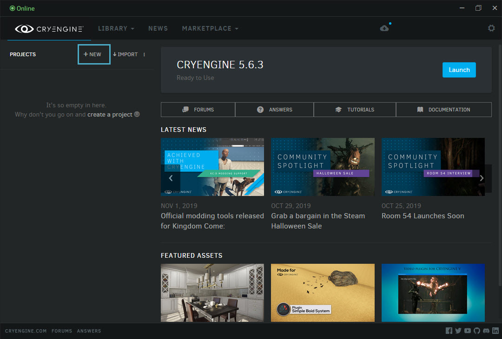
First Person Shooter
This opens the My Engines library which lists all installed CRYENGINE versions; click the +Create Project button under CRYENGINE 5.6.4 (assuming 5.6.4 has already been downloaded and installed).
Since the Audio Showcase tutorial is implemented using the First Person Shooter C++ template, select the CPP First Person Shooter template from the Project Browser, give the project a name, and click Create Project to complete the process.
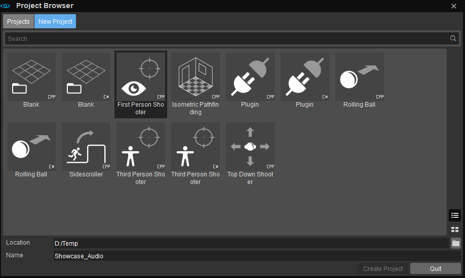
Project Browser
Next, navigate to the Showcase_Level.zip package and copy its contents to the folder of the project you just created. Be sure to select the Replace the files in the destination option in the dialog prompt that appears.
This is to not only replace certain files in the default First Person Shooter template project, but to also make changes such as deleting the reference to .animevents from the player skeleton, and setting sound_obstruction within the SurfaceTypes.xml to 0 for the purpose of this tutorial.
To locate your project's installation directory, click the
At this point, you must decide if you'd like to follow the entire tutorial, or skip the setup and other instructions for FMOD Studio, Wwise and/or SDL Mixer.
- To implement the entire tutorial, please extract and copy the contents of the Showcase_Audio_Source.zip package into your project folder.
- If you prefer to skip the middleware setup/instructions, then copy the contents of the Showcase_Assets.zip package into your project folder.
Make sure none of the downloaded asset files are write protected.
Middleware Setup
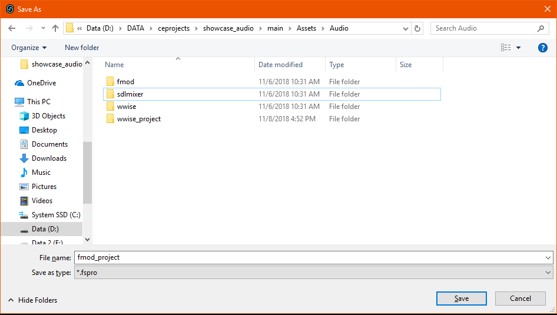
Middleware setup
FMOD Studio
CRYENGINE 5.6.4 supports FMOD Studio version 2.00.05.
If you choose to use FMOD Studio with this tutorial, begin by creating a folder named fmod in the /Assets/Audio directory of the project created in the previous step. Inside the fmod folder, create two new folders named ace and assets respectively.
Assuming FMOD Studio has been downloaded and installed on your system, launch it, and create a new FMOD project of the name fmod_project. Save this project inside the /Assets/Audio/ directory of your CRYENGINE project.
CRYENGINE's Audio Controls Editor (ACE) needs to know the path of the FMOD Studio project at all times in order to be able to read created Events and Parameters.
Since the default FMOD project path used by the ACE is audio/fmod_project, creating the project with the name fmod_project and saving it in the /Assets/Audio/folder (as described above) ensures that the correct folder structure is created.
However, if you do wish to save the FMOD project in a different location, make sure to change the project path in the ACE by selecting the Edit → Preferences option under the 
Next, to define where FMOD saves Soundbanks so that they can be read by the Engine;
- Open the Preferences window using the Edit → Preferences option from FMOD Studio's main menu.
- Navigate to the Build panel of this window and enter ../fmod in the Build banks output directory field. Alternatively, the folder can be manually selected by clicking the Browse button and locating the /Assets/Audio/fmod folder.
- In the same panel, click Desktop under the Project platforms section and set the value of the Output sub-directory field to assets.
Pressing the F7 key should generate the Master Bank. The final step in the middleware setup involves configuring the ACE to use your choice of middleware implementation.
To have the Engine's audio system load the FMOD implementation;
- Open the Console by selecting the Tools → Advanced → Console option from the Engine's main menu;
- Set the value of the s_ImplName CVar to CryAudioImplFmod by typing s_ImplName = CryAudioImplFmod in the console.
Wwise
CRYENGINE 5.6.4 supports Wwise version 2019.1.4. For this tutorial it's sufficient to use Wwise in Trial mode, which has a restricted SoundBank content of 200 assets.
If using Wwise with this tutorial, create a folder named wwise in the /Assets/Audio directory of the project created in the previous step. Inside the wwise folder, create two new folders named ace and assets respectively.
- Download and launch the Wwise Launcher from the audiokinetic website.
- Install the version of Wwise that is compatible with your Engine build, then choose to install the Authoring Tool package also.
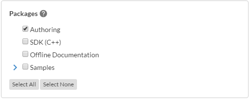
Wwise
After the installation ends, launch Wwise and click New on the Project Launcher window to create a new project. Name the project wwise_project and save it in the /Assets/Audio/ directory of your CRYNENGINE project as shown below.
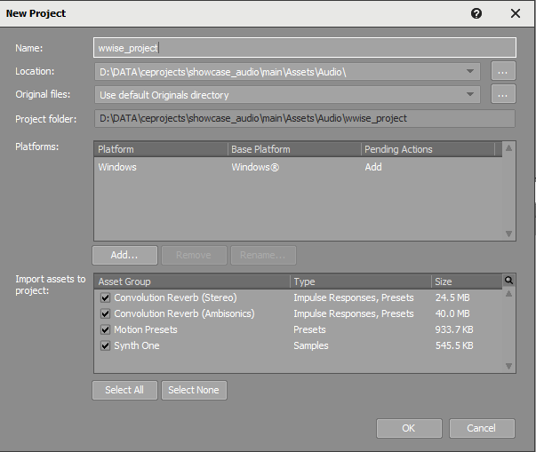
wwise_project
Since the default Wwise project path used by the ACE is audio/wwise_project, creating the project with the name wwise_project and saving it in the /Assets/Audio/ folder as described above ensures that the correct folder structure is created.
However, if you do wish to save the Wwise project in a different location, make sure to change the project path in the ACE by selecting the Edit → Preferences option under the
Next, to define where Wwise generates SoundBanks so that they can be read by the Engine;
- Select the Project → Project Settings option from Wwise's Main Menu and navigate to the Soundbanks tab.
- Under the Soundbanks Path section, click on the
symbol, and navigate to the Assets/Audio/wwise/assets of your CRYENGINE project directory. - Click OK, and then press F7 to change the layout of your Wwise project window. Click the Generate All button at the top of the project window.
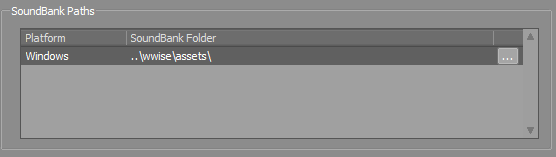
SoundBank Paths
If you now open the Assets/Audio/wwise/assets folder in your project directory, you'll find that files such as Init.bnk and Init.txt have already been created by Wwise.
To have the Engine's audio system load the Wwise implementation;
- Open the Console by selecting the Tools → Advanced → Console option from the Engine's main menu.
- Set the value of the s_ImplName CVar to CryAudioImplWwise by typing s_ImplName = CryAudioImplWwise in the console.
SDL Mixer
The Assets/Audio directory of your project contains a folder called SDLMixer, which contains two folders named of ace and assets. If using an SDL Mixer audio middleware implementation, the files created during the course of this tutorial will be stored within these two folders.
To have the Engine's audio system load the SDL Mixer implementation;
- Open the Console by selecting the Tools → Advanced → Console option from the Engine's main menu.
- Set the value of the s_ImplName CVar to CryAudioImplSDLMixer by typing s_ImplName = CryAudioImplSDLMixer in the console.
The s_ImplName CVar defines which audio middleware implementation (SDL Mixer, FMOD Studio or Wwise) is loaded by CRYENGINE's audio system. It's recommended to set its value via the user.cfg file of your project.
Level Load and Orientation
With your middleware setup, open the Audio Showcase level by selecting File → Open → Levels → Showcase_Audio from the Engine's main menu, or by opening the Game.cryproject file that was copied into your project directory.
Once the level has been loaded, navigate through it in first-person by switching to game mode (Ctrl + G). Move the first-person character using the WASD keys, aim and shoot using the mouse buttons.
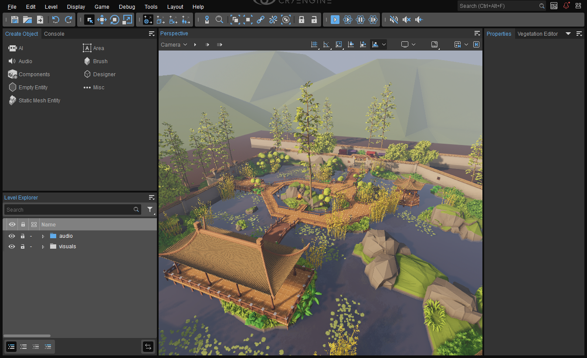
Viewport
You'll find that the garden consists of a large pond within a walled area, plenty of vegetation and a campfire at its center. Also included are two pagodas connected by walkways, a marketplace situated behind a closed gate, and a forest surrounding the entire enclosure.
Audio Controls Editor (ACE)
It's now time to familiarize yourself with the ACE, which acts as a connection between CRYENGINE and your audio middleware of choice.
Accessed from the Tools → Audio Controls Editor option of the Engine's main menu, the ACE consists of four panels namely, Audio System Controls, Properties, Middleware Data and Contexts; note that only the first three are relevant to this tutorial.
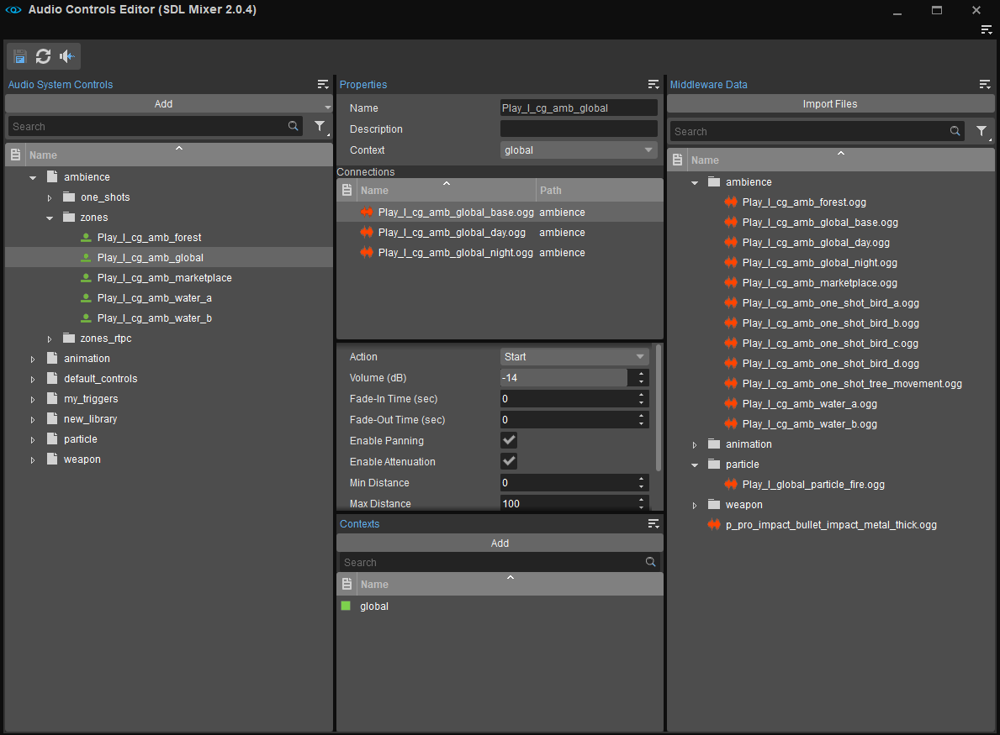
Audio Controls Editor
The Audio System Controls panel lists all controls (Triggers, Parameters, Switches, Environments and Preloads) included within the current CRYENGINE project, which allows users to create controls as needed.
The Middleware Data panel lists the available audio middleware controls that can be connected to a selected Audio System Control, while the Properties panel is where connections between a middleware and the Audio System Controls can be made.
Audio System Controls must be stored in an ACE Library; these Libraries are saved in the .../Assets/Audio/fmod/ace directory of the project if using FMOD, .../Assets/Audio/wwise/ace directory if using Wwise, or .../Assets/Audio/sdlmixer/ace when using SDL Mixer.
An Audio System Control can be created by;
- Dragging a middleware control from the Middleware Data panel to a Library in the the Audio System Controls panel.
- Clicking the Add button at the top of the Audio System Controls panel.
- Right-clicking a Library and selecting Add from the context menu.
For an in-depth overview of the ACE tool window, its panels and menu options please refer to its user documentation.
The properties of these controls can also be edited via the Properties panel.
Adding Sound to Gunfire
You would have noticed that in game mode, clicking the LMB causes the first person character to shoot a weapon. The goal of this section is to add sound to gunfire that is triggered every time the player character fires the weapon.
FMOD Studio
If using FMOD Studio, the audio effect for gunfire has been included in the _Audio_Assets/FMod Studio/chapter_01/ folder of the Audio Showcase assets' installation directory as Play_w_gun_fire_01.wav.
Creating an Event and Soundbank on FMOD Studio
Drag and drop this .wav file from disk to the Events tab on the left of your FMOD project; this opens the Create Event window with the option to create a 2D Event or a 3D Event. Select 2D Event and click the Create button to complete the process.
The reason behind creating a 2D Event for gunfire is that we'd like it to sound like it is triggered on the player. Although a 3D Event would be more appropriate, it would have to be triggered by an audio Entity that is physically placed on the player. Creating a 2D Event allows us to trigger the sound of gunfire from anywhere in the level while still sounding like it was triggered upon the player. However, this works only when there is a single player in a level and isn't practical for a multiplayer setting.
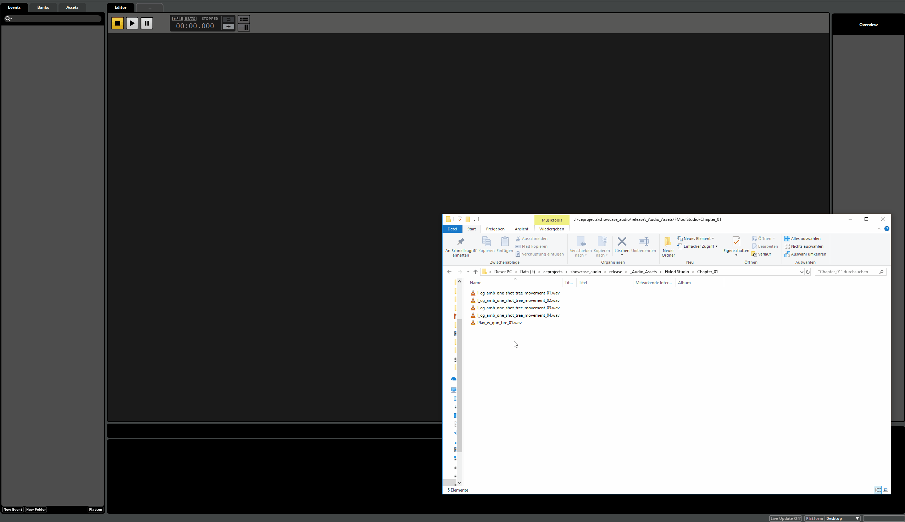
Play_w_gun_fire_01
After the Event, a Soundbank needs to be created. Soundbanks store metadata related to audio assets, and also contain compressed/encrypted audio material. To create a Soundbank for the imported gunfire audio asset;
- Open the Banks tab on the left of your FMOD project, right-click, and select the New Bank option from the context menu. Let's call the Soundbank Weapon.
- Save the FMOD project (Ctrl + S), then switch back to the Events tab of the FMOD project. An
icon against the create Event indicates that it hasn't been associated with a Soundbank. - Assign the Play_w_gun_fire_01 event to the Weapon Soundbank by right-clicking the event, and selecting Assign to Bank → Weapon from the context menu. When done, press F7 to build the created Soundbank.
The source files of all imported audio assets are listed under the Assets tab of your FMOD project.
Creating an Audio Trigger
For the Play_w_gun_fire_01 event to be triggered in the Showcase_Audio level, it needs to be connected to an audio Trigger in the ACE. If you haven't already, open the ACE in CRYENGINE by using the Tools → Audio Controls Editor option from its Main Menu.
You should now be able to see the folder structure of your FMOD project in the Middleware Data panel, with the Play_w_gun_fire_01 event listed under the Events folder, and the Weapon Soundbank under the Soundbanks folder.
To create a Trigger;
- Right-click within the Audio System Controls panel and select Add → Library; recall that all Audio System Controls must exist within Libraries.
- Let's name the Library Weapon. Once it has been created, simply drag and drop the Play_w_gun_fire_01 event from the Middleware Data panel to the Weapon Library in the Audio System Controls panel.
The created Trigger will be listed with the
- Create a new Library in the Audio System Control panel; call it Preloads.
- Drag and drop the Weapon Soundbank from the Middleware Data panel into it. This creates a Preload Request with the same name in the Audio System Control panel.
In CRYENGINE's audio system, Preloads
Save both the Weapon and the Preloads Libraries by clicking the
- First refresh the audio system by clicking the
button at the upper left corner of the ACE. - With the Trigger selected, double-click it, press the spacebar or right-click it and select the Execute Trigger option from the context menu.
Remember to save created Libraries in the ACE using the 
To change the volume of the Play_w_gun_fire_01 sound;
- Open FMod Studio and click on the Play_w_gun_fire_01 event in the Events Tab.
- Use the volume dial
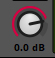
Changes can be previewed in FMOD by pressing the spacebar with the Event selected. Remember to save the project, rebuild Soundbanks and reload the audio engine on the ACE to ensure that all changes are carried over to CRYENGINE.
Wwise
If using Wwise, the audio effect for gunfire has been included in the _Audio_Assets/Wwise/chapter_01/ folder of the Audio Showcase level assets' installation directory as w_gun_fire_01.wav.
Creating an Event and Soundbank on Wwise
Press the F5 key in Wwise to switch back to its Designer Layout.
On the left of your project window is the Project Explorer, it consists of several hierarchies; while the Interactive Music Hierarchy is reserved only for music, sound effects can be imported into the Actor-Mixer Hierarchy. To import our gunfire audio effect;
- Click on Default Work Unit under Actor-Mixer Hierarchy and click the
icon at the top of the panel to create a new Actor-Mixer. Name it Weapon. - Drag and drop the w_gun_fire_01.wav file from the _Audio_Assets/Wwise/chapter_01/ folder of the Audio Showcase level assets directory into the newly created Actor-Mixer.
- Click Import on the Audio File Importer window that appears; w_gun_fire_01 should now be listed as a child of the Weapon Actor-Mixer within the Project Explorer of your Wwise project.
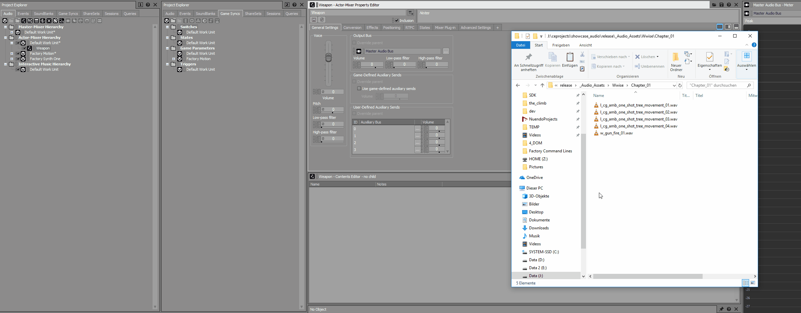
Wwise import asset
The w_gun_fire_01 listing under Weapon Actor-Mixer is not the actual audio file itself, but rather a Sound SFX container; the original audio file was copied to the Originals/SFX folder of your Wwise project before being connected to this container.
An Actor-Mixer has multiple uses on Wwise; it cannot only be used to organize audio assets into categories, but it also functions as the "highest-possible-parent" in the sense that it can be used to define changes that affect all children.
To now actually create an Event for the w_gun_fire_01 object, right-click the w_gun_fire_01 Sound SFX container and select the New Event → Play option from the menu. If you switch to the Events tab in the Project Explorer, then you should be able to see the created Event Play_w_gun_fire_01.
- Expand the Events item at the top of the hierarchy; the Play_w_gun_fire_01 should be listed under Default Work Unit.
- Click the
icon at the top of the Project Explorer panel to create a new folder, name it Weapon, and place the Play_w_gun_fire_01 event into it.
Since SoundBanks store metadata and other information related to an audio asset, then we need to create a SoundBank for the created Event so that it can be used in our level.
- Open the SoundBanks tab of the Project Explorer.
- Select the Default Work Unit listing and then click on the
symbol to create a new SoundBank; name it Weapon.
Save your Wwise project. We now need to add the Play_w_gun_fire_01 Event to the Weapon SoundBank, so that Wwise recognizes in which SoundBank the Event's data needs to be stored. To do so;
- Press the F7 key to switch to the SoundBank Manager layout.
- Expand the Default Work Unit hierarchy item in the middle panel and select the Weapon SoundBank.
- Switch to the Events tab in the Project Explorer, then drag and drop the Weapon folder into the SoundBank Editor panel at the bottom of the screen.
In this way, we've defined that all the content of the Weapon Events folder should be built into the Weapon SoundBank. Save the Wwise project again, and click the Generate All button at the top of the window.
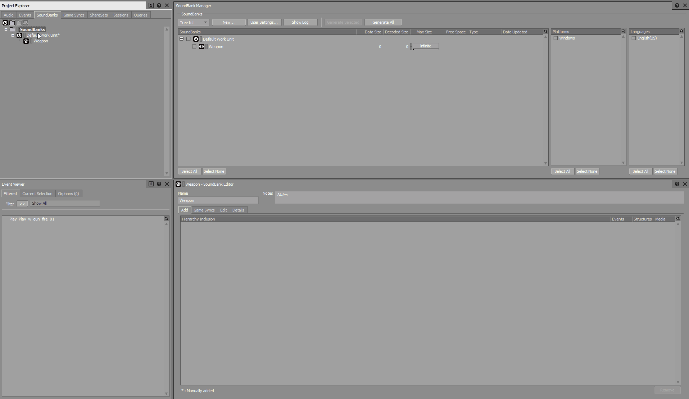
Weapon SoundBank
Creating an Audio Trigger
For the Play_w_gun_fire_01 event to be triggered in the Showcase_Audio level, it needs to be connected to an audio Trigger in the ACE. If you haven't already, open the ACE in CRYENGINE by using the Tools → Audio Controls Editor option from its Main Menu.
You should now be able to see the folder structure of your Wwise project in the Middleware Data panel, with the Play_w_gun_fire_01 event listed under the Events folder, and the Weapon Soundbank under the Soundbanks folder.
To create a Trigger;
- Right-click within the Audio System Controls panel and select Add → Library; recall that all Audio System Controls must exist within Libraries.
- Let's name the Library Weapon. Once it has been created simply drag and drop the Play_w_gun_fire_01 event from the Middleware Data panel to the Weapon Library in the Audio System Controls panel.
The created Trigger will be listed with the 
- Create a new Library in the Audio System Control panel; call it Preloads.
- Drag and drop the Weapon Soundbank from the Middleware Data panel into it. This creates a Preload Request with the same name in the Audio System Control panel.
In CRYENGINE's audio system, Preloads
Save both the Weapon and Preloads Libraries by clicking the 
- First refresh the audio system by clicking the

- With the Trigger selected, double-click it, press the spacebar or right-click it and select the Execute Trigger option from the context menu.
Remember to save created Libraries in the ACE using the
To change the volume of the Play_w_gun_fire_01 sound;
- Open Wwise, and switch to the Designer Layout by pressing the F5 key.
- Select Play_w_gun_fire_01 from the Audio tab of the Project Explorer, then use the volume fader that appears on the right panel. Changes can be previewed by pressing the spacebar.
When satisfied, save your Wwise project and rebuild all SoundBanks by pressing the F7 key. Reload the audio engine on the ACE, then jump into Game Mode to test your changes.
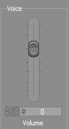
Volume Fader
SDL Mixer
If using SDL Mixer, the audio effect for gunfire has been included in the _Audio_Assets/sdlmixer/chapter_01/ folder of the Audio Showcase level assets' installation directory as Play_w_gun_fire_01.ogg.
- Create a folder called Weapon under /Assets/Audio/sdlmixer/assets in your project.
- Drag and drop the Play_w_gun_fire_01.ogg from _Audio_Assets/sdlmixer/chapter_01/ into the newly created Weapon folder.
For Play_w_gun_fire_01.ogg to be triggered in the Audio Showcase level it needs to be connected to an audio Trigger in the ACE. If you haven't already, open the ACE in CRYENGINE by using the Tools → Audio Controls Editor option from its Main Menu.
You should now be able to see the Weapon folder in the Middleware Data panel, with the Play_w_gun_fire_01.ogg included.
To create a Trigger;
- Right-click within the Audio System Controls panel and select Add → Library; recall that all Audio System Controls must exist within Libraries.
- Let's name the Library Weapon. Once it has been created, simply drag and drop the Play_w_gun_fire_01.ogg file from the Middleware Data panel to the Weapon Library in the Audio System Controls panel.
The created Trigger will be listed with the 

- First, refresh the audio system by clicking the

- With the Trigger is selected, double-click it, press the spacebar or right-click it and select the Execute Trigger option from the context menu.
When the Play_w_gun_fire_01 Event is selected in the Audio Systems Control panel, its properties are listed in the center Properties panel; deactivate the Enable Panning and Enable Attenuation toggles, and save the created Library.
The Enable Panning property allows for an audio Trigger to be positioned in 3D space within the level, while Enable Attenuation lets users define how a sound is attenuated with a change in distance. Since we'd like for the sound to be audible upon the player and not positioned in the world, these properties have been disabled to ignore any positioning changes made by the user.
Jump into Game Mode (Ctrl + G) and press the LMB to fire the weapon; on gunfire, the created Audio Trigger is called by CRYENGINE's visual scripting tool Flow Graph causing the Play_w_gun_fire_01 Trigger to play.
The gunfire volume is too low? Select the Play_w_gun_fire_01 Trigger in the ACE and increase the value of the Volume (dB) field in the Properties panel to -6.
Adding Tree Movements
FMOD Studio
If you go back to the chapter_01 folder that contained the Play_w_gun_fire_01.wav file in the previous step, you'll find four distinct audio tracks named l_cg_amb_one_shot_tree_movement_0X.wav.
These sounds are meant to mimic the natural rustle of leaves and serve as the basis of the level's ambience. In this step, we'll combine all four audio assets to form a 3D Event in FMOD which will then be connected to an Audio Trigger Spot Entity so that it can be heard within the level.
Creating a 3D Event in FMOD Studio
Open the Audio Bin in FMOD Studio by selecting the Window → Audio Bin option from its main menu, or by using the Ctrl + 3 keyboard shortcut; the Audio Bin is where the project's audio assets are stored.
To keep the Audio Bin organized, we create a folder named Ambience and within it, another folder called oneshots. Drag and drop the four audio asset files Play_l_cg_amb_one_shot_tree_movement_0X.wav into the oneshots folder.
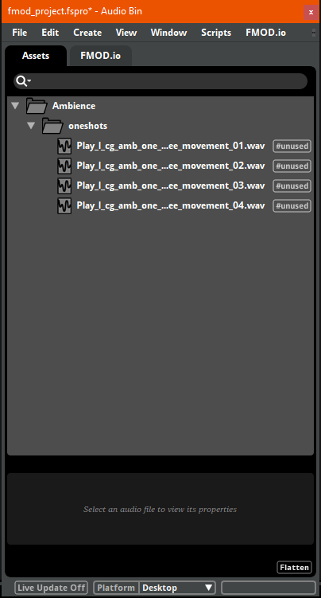
Audio Bin
Switch back to the Events tab in FMOD Studio's main window. We need to create a folder by right-clicking within the tab and selecting the New Folder option. We will name the folder oneshots within a folder named Ambience (as we did in the Audio Bin).
Next, drag and drop the four audio asset files l_cg_amb_one_shot_tree_movement_0X .ogg from the Audio Bin into the oneshot folder of the Event tab; as before this opens the Create Event window with the option to create a 2D Event or 3D Event.
Since we need to create a 3D Event;
- Select 3D Event in the Create Event window.
- Check the Create a new event with one multi-instrument radio box under Additional options, and then click the Create button to complete the process as shown in the GIF below.
Rename the Event to Play_l_cg_amb_one_shot_tree_movement by double-clicking it.
A Multi-instrument plays one of its assigned audio files each time it is triggered, this allows for more variation in audio while using a single audio Trigger.
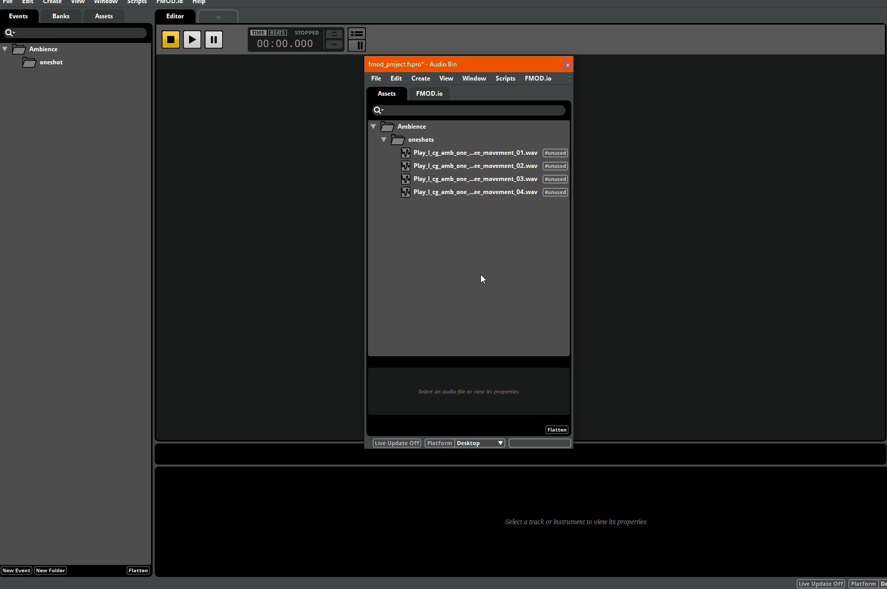
3D Event
Press the spacebar to play the Play_l_cg_amb_one_shot_tree_movement Event in FMOD. You'll notice that the Event plays a different audio asset each time - this randomization is an important aspect of realistic sound design.
As with the Play_w_gun_fire_01 Event created in the previous step, a Soundbank is needed to be able to use and hear the Play_l_cg_amb_one_shot_tree Event in our project. To do so;
- Create a new bank called Ambience in the Banks tab of your FMOD project window.
- Switch to the Events tab, drag and drop the Play_l_cg_amb_one_shot_tree Event into the Ambience Soundbank in the Banks tab.
- Save changes and then press F7 to save all banks.
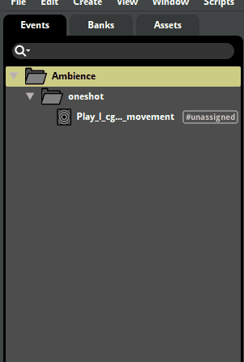
Ambience
If you switch to the Audio Controls Editor, you'll now find the Play_l_cg_amb_one_shot_tree Event listed under Events → Ambience → oneshot of the Middleware Data panel. This now needs to be connected to an audio Trigger in the Audio System Controls panel.
To do so;
- Create a Library called Ambience in the Audio System and within it, a folder named oneshot.
- Drag the Play_l_cg_amb_one_shot_tree Event from the Middleware Data panel into the oneshot folder on the Audio System Controls panel.
Now since the Event's Ambience Soundbank containing its audio playback information also needs to be loaded into memory for it to function, a Preload Request for the same needs to be created in the ACE.
- Create a new Library called Preloads, then drag and drop the Ambience Soundbank from the Banks folder in the Middleware Data Panel into it.
- Save Libraries and preview the Play_l_cg_amb_one_shot_tree Trigger in the ACE.
Wwise
If you go back to the chapter_01 folder that contained the w_gun_fire_01 file in the previous step, you'll find four distinct audio tracks named l_cg_amb_one_shot_tree_movement_0X.wav.
These sounds are meant to mimic the natural rustle of leaves, and serve as the basis of the level's ambience. In this step we'll combine all four audio assets to form an Event on Wwise, which will then be connected to an Audio Trigger Spot Entity so that it can be heard within the level.
Creating an Event and SoundBank in Wwise
Open Wwise and create a new Actor-Mixer within the Default Work Unit of the Actor-Mixer-Hierarchy. Name it Ambience. We then need to create a Random Container, whose function will be to play the l_cg_amb_one_shot_tree_movement_0X audio files randomly;
- Right-click the Ambience Actor-Mixer and select the New Child → Random Container option from the menu.
- Drag and drop all the l_cg_amb_one_shot_tree_movement_0X.wav audio files from the _Audio_Assets/Wwise/chapter_01/ folder of the Audio Showcase Level asset's directory into the Random Container.
- Name the Random Container l_cg_amb_one_shot_tree_movement.
You could preview the randomization of these tracks by selecting the Random Container and pressing the spacebar. The Random Container can operate in different modes and which can be changed via the Play Type section of the Random Container Property Editor on the right panel.
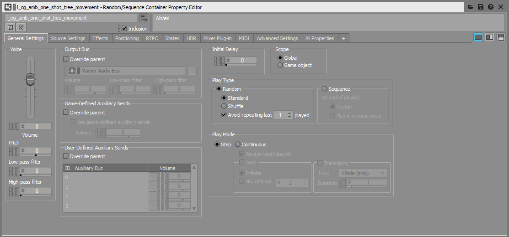
Play Type
In the Random → Standard play mode, an audio object is not removed from the pool of audio objects after it is played, meaning that it is likely to be repeated. Whereas in the Random → Shuffle mode, an audio object is removed from the pool once it has been played, so preventing it from being repeated until all other objects have finished playing.
The next step is to create an Event for the l_cg_amb_one_shot_tree_movement Random Container.
- Right-click the Random Container and select the New Event → Play option from the menu. This should create a new Event called Play_l_cg_amb_one_shot_tree_movement in the Events tab of the Project Explorer.
- Create a folder called Ambience under Events → Default Work Unit, and move the Play_l_cg_amb_one_shot_tree_movement Event into it.
Since this Event also requires a SoundBank, switch to the SoundBanks tab of the Project Explorer and create a new SoundBank called Ambience. Switch your Wwise window to SoundBank Layout by pressing F7, then assign the Ambience Event folder to the Ambience SoundBank as we did in the previous section.
Remember to click Generate All to regenerate all SoundBanks, and save your Wwise project when complete.
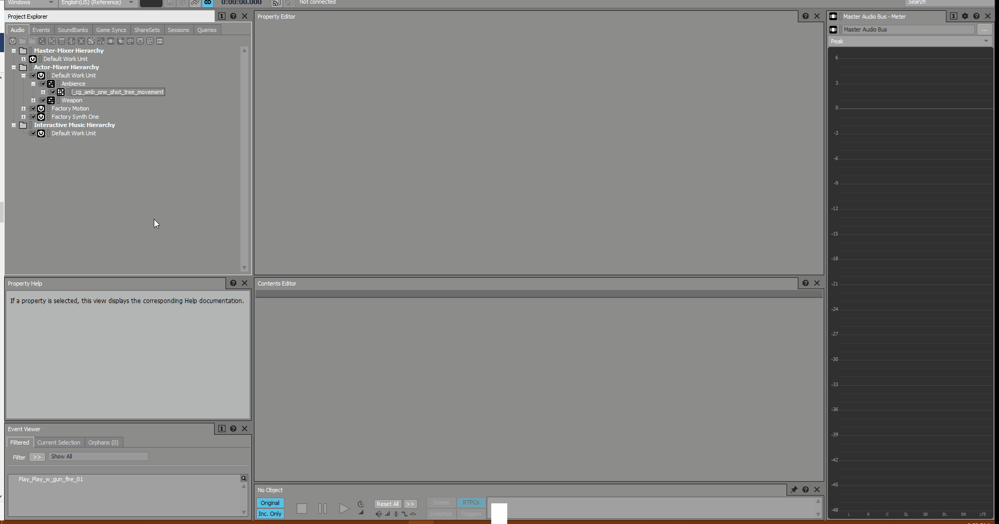
Ambience Event and Soundbank
If you switch to the Audio Controls Editor, you'll now find the Play_l_cg_amb_one_shot_tree Event listed under Events → Ambience of the Middleware Data panel. This now needs to be connected to an audio Trigger in the Audio system Controls panel.
To do so;
- Create a Library called Ambience in the Audio System and within it, a folder named oneshot.
- Drag the Play_l_cg_amb_one_shot_tree Event from the Middleware Data panel into the oneshot folder on the Audio System Controls panel.
Now since the Event's Ambience Soundbank containing its audio playback information also needs to be loaded into memory for it to function, a Preload Request for the same needs to be created in the ACE.
- Create a new Library called Preloads, then drag and drop the Ambience Soundbank from the Banks folder in the Middleware Data Panel into it.
- Save Libraries and preview the Play_l_cg_amb_one_shot_tree Trigger in the ACE.
SDL Mixer
If you go back to the chapter_01 folder that contained the Play_w_gun_fire_01.ogg file in the previous step, you'll find a track called Play_l_cg_amb_one_shot_tree_movement.ogg.
Its audio is meant to mimic the natural rustle of leaves, and serves as the basis of the level's ambience. In this step we'll connect the audio file to an Audio Trigger Spot Entity so that it can be heard within the level.
- Begin by creating a folder called Ambience within the /Assets/Audio/SDL_Mixer/assets directory of your project and copy the Play_l_cg_amb_one_shot_tree_movement.ogg file into it.
- In the ACE, create a Library called Ambience in the Audio Systems Control panel, then drag and drop the Play_l_cg_amb_one_shot_tree_movement.ogg file from the Middleware Data panel into it.
Save Libraries and reload the audio engine as before.
Audio Trigger Spot
We now need the Play_l_cg_amb_one_shot_tree Trigger to play across the entire level, for which we use the Audio Trigger Spot (ATS) Entity. The ATS triggers audio Events at a specific position, which can be automatically randomized along with time delays.
It is found under the Create Object tool, accessed via the Tools → Level Editor → Create Object option of the Sandbox's main menu.
- Select the Audio → Audio Trigger Spot option from the Create Object tool panel.
- If you now mouse-over the Viewport, you should see the
icon representing the ATS Entity; click anywhere on the ground of the Audio Showcase level to place it. - At this point, the properties of the ATS Entity should be visible in the Properties panel on the right of your Sandbox window. Locate the PlayTrigger field, click the

This field, as you've probably guessed, specifies the audio Trigger that needs to be played by the ATS Entity. - At this stage the Play_l_cg_amb_one_shot_tree sounds should be audible both in the Viewport and in Game Mode.
To have the Trigger execute more frequently, set the value of the Behavior field under the ATS Entity's Play Mode properties to TriggerRate.
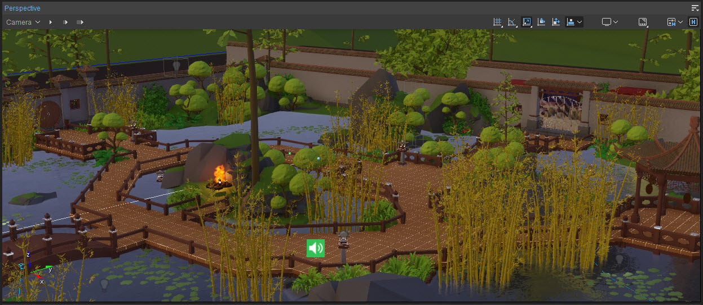
ATS Placed
This causes the Trigger to execute every 'x' seconds after the previous Trigger instance, where 'x' is a random value between the ATS' MinDelay and MaxDelay property values. These fields are found directly under the ATS' Behavior property field.
Although the MinDelay and MaxDelay values are defined in seconds, they're specified in milliseconds within this tutorial due to a bug in Engine release 5.6.4 that produces unexpected results.
Try setting their values to 1000 and 100,000 respectively, so that the Play_l_cg_amb_one_shot_tree sound is re-triggered every 1-100 seconds.
Conclusion
Although the ambience trigger is called by an audio specific Entity (the ATS), triggers can also be called in the same way using animations, particle effects, or by code.
This concludes the first chapter of the Audio Showcase tutorial. The remaining chapters will have us implementing audio for player footsteps, particle effects and dynamic ambience.